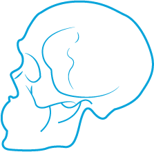
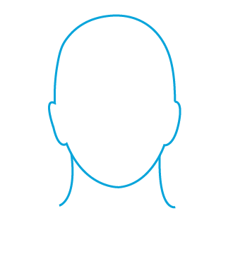
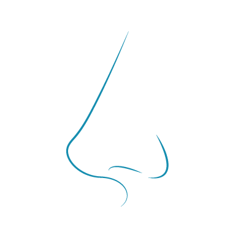

Anatomía del desaparecido
Craneos
Dolicocefalia
Este patrón en este biotipo es de cara larga y estrecha de perfil convexo y arcadas dentarias frecuentemente portadoras de apiñamiento. La musculatura débil con un ángulo del plano mandibular muy inclinado, con una tendencia a la mordida abierta anterior debido a la dirección del crecimiento vertical de la mandíbula. Se caracteriza por ser largo en su longitud, y se ve aumentada por lo estrecho de las sienes, de perfil lo curvo de la zona occipital te permite distinguirlo mejor, el rostro se ve más alargado y delgado.
Braquicéfalo
Este patrón concierne a caras cortas y anchas suelen tener mandíbula fuerte y cuadra. Sus arcadas dentarias tienen más amplitud al momento de compararlas con las ovoides (mesocefalo) o triangulares estrechas (dolicofaciales) con un vector de crecimiento en dirección hacia abajo, anomalía de biprotrusión (los maxilares no cuadran bien) sin apiñamiento en dentadura. Se caracteriza por ser redondo, de longitud más corto, sienes más abultadas, vista de perfil la zona occipital se ve plana, el rostro se ve más ancho y pequeño.
Mesocéfalo
Tienen proporcionados sus diámetros vertical y transverso con maxilares y arcadas dentarias de configuración facial normal. Su relación maxilomandibular normal, musculatura y perfil blando y simétrico. Este cráneo es normal ni muy largo, ni muy corto, ni muy ancho o estrecho, de los 3 es el intermedio. De perfil tiene una curva normal, no plana ni muy pronunciada.
Rostros
Redondo
Este tipo de rostro se caracteriza por tener aproximadamente la misma altura que anchura, generando una figura circular en la que no se observan formas angulosas sino curvas y en la que las mejillas se acercan al mentón, además de pómulos anchos. Suelen dar impresión de placidez y dulzura, así como de jovialidad (si bien en ocasiones también de cierta infantilidad).
Ovalado
El rostro ovalado es considerado como la forma de rostro más armonioso y favorecedor en general pero especialmente en el sexo femenino, siendo el más cercano al ideal de belleza propio de los cánones estéticos de nuestra sociedad. Al igual que el rostro redondo, nos encontramos con una forma de cara en la que prevalecen las curvas, si bien el rostro es más alargado que ancho. La barbilla tiende a ser más corta que la frente y suelen marcarse mucho las mejillas.
Cuadrado
El rostro cuadrado se caracteriza por una forma de cara muy angulosa y de rasgos marcados. En este tipo de rostros frente y mandíbula son por lo general igual de anchos, una anchura que se corresponde con la altura de la cara. Los maxilares suelen estar muy marcados. El rostro cuadrado suele vincularse a la masculinidad, la fuerza y la estabilidad, siendo por lo general más valorado en el sexo masculino.
Rectangular
Podemos considerar el tipo de rostro rectangular o alargado como la versión cuadrada del rostro ovalado. En él vemos una frente por lo general larga, pómulos altos y rasgos no muy marcados. A menudo es difícil de distinguir del cuadrado (aunque su barbilla suele ser más redondeada) y del ovalado.
Hexagonal
El rostro de forma hexagonal, también llamado de forma de diamante, se caracteriza por unos pómulos muy marcados que destacan en anchura en comparación con mandíbula y frente. El mentón tiende a estar marcado.
Triangular
El rostro triangular se caracteriza por una mandíbula amplia y una frente estrecha en comparación, con los pómulos en una situación intermedia.
Triangular Invertido
El rostro en forma de corazón, también llamado triángulo invertido, se caracteriza por tener unos pómulos más anchos que la mandíbula pero esta menos que la frente. La barbilla es delicada y a veces puntiaguda.
Ojos

Almendrado
Se trata del tipo de ojos más común. Tal como su nombre apunta, tienen una forma similar a una almendra. La mayoría de la población tiene ojos almendrados, con los bordes externos inclinados hacia arriba. Este tipo de ojos suelen ser simétricos, con lo cual es más sencillo lograr que las cejas acentúen más su forma de almendra.
Juntos
Este tipo de ojos se caracterizan porque la distancia entre ellos es más pequeña que la estándar, ya que suele ser menor a la extensión de un ojo. Estos son todo lo contrario a los ojos separados. Están más juntos de lo habitual, estando así los lagrimales muy cerca de la nariz.
Hundidos
Estos ojos se caracterizan porque el párpado tiene tendencia a ser más prominente en el borde externo que en el interno. Presentan una sombra o “bolsa” en la esquina interior. Generalmente, en este tipo de ojos, la piel del párpado se percibe más prominente en el borde exterior. También se nota una especie de “hueco” debajo del hueso de las cejas.
Saltones
Es justo lo contrario a lo anterior, caracterizándose por un abultamiento o elevación con respecto al interior de los ojos. Se trata de ojos prominentes y elevados, con respecto al nivel del rostro. Son fáciles de reconocer. En los ojos saltones el globo ocular se percibe de forma más prominente, su tamaño también es mayor.
Asiáticos
Los ojos que pertenecen a este tipo son más pequeños que la media y muy fáciles de reconocer porque los pliegues de los párpados no son visibles, generándose un espacio mayor entre la ceja y los ojos.
Caídos
Los ojos caídos tienen esta apariencia cuando el párpado móvil parece ejercer peso sobre el ojo estando abierto. Algunos rostros asiáticos tienen este tipo de ojos. Es posible que te hayas sentido identificado con la forma de los ojos almendrados, pero has observado que los tuyos en lugar de inclinarse hacia arriba en sus bordes exteriores, se inclinan hacia abajo. En este caso tus ojos son lo que se denomina ojos caídos.
Apartados
Son fáciles de reconocer ya que son opuestos a los ojos estrechos o juntos. Son ojos que se ven pequeños con respecto al resto de los rasgos faciales, puesto que la distancia que los separa es mayor que la extensión de un ojo. Es fácil reconocer este tipo de ojos. Se ven pequeños en relación al resto de los rasgos del rostro, ya que la distancia que separa a uno del otro es mayor que la extensión de un ojo
Cuerpo

Ectomorfo
Una persona de cuerpo ectomorfo es alguien que acumula poca grasa. Así mismo, su estructura ósea no suele ser muy gruesa, lo que no necesariamente implica que sean individuos de huesos débiles.
Endomorfo
Tienen la tendencia de acumular grasas en sus tejidos y al contrario de lo que ocurre con los ectomorfos. Toda su anatomía es más ancha, empezando por la estructura esquelética.
Mesomorfo
Genéticamente se les considera como el cuerpo ideal, lo que no necesariamente implica que se trate de personas más sanas. Piernas fuertes, hombros gruesos y cintura estrecha forman parte de sus rasgos distintivos.
Nariz
Aguileña
Es un tipo de nariz que se caracteriza por tener un tabique muy pronunciado que se curva hacia la punta.
Griega
A este tipo de nariz también se la denomina nariz recta, ya que el puente que tiene es completamente recto. Se caracteriza por tener una proporción adecuada y clásica para el rostro. Al igual que la romana, la nariz griega debe su nombre a las esculturas de dioses griegos que poseían un apéndice nasal muy similar.
Nubia
Genéticamente se les considera como el cuerpo ideal, lo que no necesariamente implica que se trate de personas más sanas. Piernas fuertes, hombros gruesos y cintura estrecha forman parte de sus rasgos distintivos.
Chata
Se trata de esas narices que son delgadas y con la punta muy plana. De hecho, si la ponemos de perfil está hundida en la cara, casi no tiene puente nasal. Este tipo de nariz padece una depresión o hundimiento en la superficie a lo largo del puente nasal. En este tipo de casos, el cirujano corrige la nariz mediante el uso de cartílago septal o con la ayuda de un implante para rellenar el área del hundimiento y conseguir un puente más uniforme.
Respingada
La nariz respingada tiene una punta sobresaliente que se va aguzando. El tabique suele ser recto, aunque se curva un poco hacia el final. Por ello, las fosas parecen apuntar hacia el frente.
Bulbosa
Esta nariz se caracteriza por ser muy redonda y tener la punta en forma de ''bola''. En este caso, el cirujano se centrará en la transformación del cartílago para conseguir una punta menos redondeada y más esbelta.
Desigual
Este tipo de nariz está marcado por su contorno desigual, uno de los dos lados de la nariz es diferente al otro. La razón de esta desigualdad suele ser por el estado del cartílago subyacente. Para la corrección de este tipo de nariz habría que centrarse en el cartílago que se encuentra debajo de la punta de la nariz. El resultado es lograr una simetría entre ambos lados.